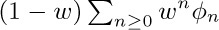
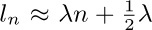
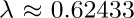
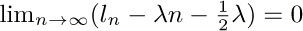
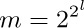

, and express the answer in two-line notation. (Compare with Eq. (4).)
, and express the answer in two-line notation. (Compare with Eq. (4).)Exercises
1. [02] Consider the transformation of \{0, 1, 2, 3, 4, 5, 6\} that replaces x by 2x mod 7. Show that this transformation is a permutation, and write it in cycle form.
2. [10] The text shows how we might set (a, b, c, d, e, f) ← (c, d, f, b, e, a) by using a series of replacement operations (x ← y) and one auxiliary variable t. Show how to do the job by using a series of exchange operations (x ↔ y) and no auxiliary variables.
3. [03] Compute the product , and express the answer in two-line notation. (Compare with Eq. (4).)
4. [10] Express (a b d)(e f) (a c f) (b d) as a product of disjoint cycles.
 5. [M10] Equation (3) shows several equivalent ways to express the same permutation in cycle form. How many different ways of writing that permutation are possible, if all singleton cycles are suppressed?
5. [M10] Equation (3) shows several equivalent ways to express the same permutation in cycle form. How many different ways of writing that permutation are possible, if all singleton cycles are suppressed?
6. [M28] What changes are made to the timing of Program A if we remove the assumption that all blank words occur at the extreme right?
7. [10] If Program A is presented with the input (6), what are the quantities X, Y, M, N, U, and V of (19)? What is the time required by Program A, excluding input-output?
 8. [23] Would it be feasible to modify Algorithm B to go from left to right instead of from right to left through the input?
8. [23] Would it be feasible to modify Algorithm B to go from left to right instead of from right to left through the input?
9. [10] Both Programs A and B accept the same input and give the answer in essentially the same form. Is the output exactly the same under both programs?
 10. [M28] Examine the timing characteristics of Program B, namely, the quantities A, B, ..., Z shown there; express the total time in terms of the quantities X, Y, M, N, U, V defined in (19), and of F. Compare the total time for Program B with the total time for Program A on the input (6), as computed in exercise 7.
10. [M28] Examine the timing characteristics of Program B, namely, the quantities A, B, ..., Z shown there; express the total time in terms of the quantities X, Y, M, N, U, V defined in (19), and of F. Compare the total time for Program B with the total time for Program A on the input (6), as computed in exercise 7.
11. [15] Find a simple rule for writing π− in cycle form, if the permutation π is given in cycle form.
12. [M27] (Transposing a rectangular matrix.) Suppose an m × n matrix (aij), m ≠ n, is stored in memory in a fashion like that of exercise 1.3.2–10, so that the value of aij appears in location L + n(i − 1) + (j − 1), where L is the location of a11 . The problem is to find a way to transpose this matrix, obtaining an n × m matrix (bij), where bij = aji is stored in location L + m(i − 1) + (j − 1). Thus the matrix is to be transposed “on itself.” (a) Show that the transposition transformation moves the value that appears in cell L + x to cell L + (mx mod N), for all x in the range 0 ≤ x < N = mn − 1. (b) Discuss methods for doing this transposition by computer.
 13. [M24] Prove that Algorithm J is valid.
13. [M24] Prove that Algorithm J is valid.
 14. [M34] Find the average value of the quantity A in the timing of Algorithm J.
14. [M34] Find the average value of the quantity A in the timing of Algorithm J.
15. [M12] Is there a permutation that represents exactly the same transformation both in the canonical cycle form without parentheses and in the linear form?
16. [M15] Start with the permutation 1324 in linear notation; convert it to canonical cycle form and then remove the parentheses; repeat this process until arriving at the original permutation. What permutations occur during this process?
17. [M24] (a) The text demonstrates that there are n! Hn cycles altogether, among all the permutations on n elements. If these cycles (including singleton cycles) are individually written on n! Hn slips of paper, and if one of these slips of paper is chosen at random, what is the average length of the cycle that is thereby picked? (b) If we write the n! permutations on n! slips of paper, and if we choose a number k at random and also choose one of the slips of paper, what is the probability that the cycle containing k on that slip is an m-cycle? What is the average length of the cycle containing k?
 18. [M27] What is pnkm, the probability that a permutation of n objects has exactly k cycles of length m? What is the corresponding generating function Gnm (z)? What is the average number of m-cycles and what is the standard deviation? (The text considers only the case m = 1.)
18. [M27] What is pnkm, the probability that a permutation of n objects has exactly k cycles of length m? What is the corresponding generating function Gnm (z)? What is the average number of m-cycles and what is the standard deviation? (The text considers only the case m = 1.)
19. [HM21] Show that, in the notation of Eq. (25), the number Pn0 of derangements is exactly equal to n!/e rounded to the nearest integer, for all n ≥ 1.
20. [M20] Given that all singleton cycles are written out explicitly, how many different ways are there to write the cycle notation of a permutation that has α1 one-cycles, α2 two-cycles, ... ? (See exercise 5.)
21. [M22] What is the probability P (n; α1, α2, ...) that a permutation of n objects has exactly α1 one-cycles, α2 two-cycles, etc.?
 22. [HM34] (The following approach, due to L. Shepp and S. P. Lloyd, gives a convenient and powerful method for solving problems related to the cycle structure of random permutations.) Instead of regarding the number, n, of objects as fixed, and the permutation variable, let us assume instead that we independently choose the quantities α1, α2, α3, ... appearing in exercises 20 and 21 according to some probability distribution. Let w be any real number between 0 and 1.
22. [HM34] (The following approach, due to L. Shepp and S. P. Lloyd, gives a convenient and powerful method for solving problems related to the cycle structure of random permutations.) Instead of regarding the number, n, of objects as fixed, and the permutation variable, let us assume instead that we independently choose the quantities α1, α2, α3, ... appearing in exercises 20 and 21 according to some probability distribution. Let w be any real number between 0 and 1.
a) Suppose that we choose the random variables α1, α2, α3, ... according to the rule that “the probability that αm = k is f (w, m, k),” for some function f (w, m, k). Determine the value of f (w, m, k) so that the following two conditions hold: (i) ∑k ≥0f (w, m, k) = 1, for 0 < w < 1 and m ≥ 1; (ii) the probability that α1 + 2α2 + 3α3 + · · · = n and that α1 = k1, α2 = k2, α3 = k3, ... equals (1 − w)wnP (n; k1, k2, k3, ...), where P (n; k1, k2, k3, ...) is defined in exercise 21.
b) A permutation whose cycle structure is α1, α2, α3, ... clearly permutes exactly α1 + 2α2 + 3α3 + · · · objects. Show that if the α’s are randomly chosen according to the probability distribution in part (a), the probability that α1 +2α2 +3α3 +· · · = n is (1 − w)wn; the probability that α1 + 2α2 + 3α3 + · · · is infinite is zero.
c) Let φ(α1, α2, ...) be any function of the infinitely many numbers α1, α2, ... . Show that if the α’s are chosen according to the probability distribution in (a), the average value of φ is ; here φn denotes the average value of φ taken over all permutations of n objects, where the variable αj represents the number of j-cycles of a permutation. [For example, if φ(α1, α2, ...) = α1, the value of φn is the average number of singleton cycles in a random permutation of n objects; we showed in (28) that φn = 1 for all n.]
d) Use this method to find the average number of cycles of even length in a random permutation of n objects.
e) Use this method to solve exercise 18.
23. [HM42] (Golomb, Shepp, Lloyd.) If ln denotes the average length of the longest cycle in a permutation of n objects, show that , where  is a constant. Prove in fact that .
24. [M41] Find the variance of the quantity A that enters into the timing of Algorithm J. (See exercise 14.)
 26. [M24] Extend the principle of inclusion and exclusion to obtain a formula for the number of elements that are in exactly r of the subsets S1, S2, ..., SM . (The text considers only the case r = 0.)
26. [M24] Extend the principle of inclusion and exclusion to obtain a formula for the number of elements that are in exactly r of the subsets S1, S2, ..., SM . (The text considers only the case r = 0.)
27. [M20] Use the principle of inclusion and exclusion to count the number of integers n in the range 0 ≤ n < am1m2 ... mt that are not divisible by any of m1, m2, ..., mt . Here m1, m2, ..., mt, and a are positive integers, with mj⊥ mk when j ≠ k.
28. [M21] (I. Kaplansky.) If the “Josephus permutation” defined in exercise 1.3.2–22 is expressed in cycle form, we obtain (1 5 3 6 8 2 4)(7) when n = 8 and m = 4. Show that this permutation in the general case is the product (n n−1 ... 2 1)m−1 × (n n−1 ... 2)m−1 ... (n n−1)m−1.
29. [M25] Prove that the cycle form of the Josephus permutation when m = 2 can be obtained by first expressing the “perfect shuffle” permutation of \{1, 2, ..., 2n\}, which takes (1, 2, ..., 2n) into (2, 4, ..., 2n, 1, 3, ..., 2n−1), in cycle form, then reversing left and right and erasing all the numbers greater than n. For example, when n = 11 the perfect shuffle is (1 2 4 8 16 9 18 13 3 6 12)(5 10 20 17 11 22 21 19 15 7 14) and the Josephus permutation is (7 11 10 5)(6 3 9 8 4 2 1).
30. [M24] Use exercise 29 to show that the fixed elements of the Josephus permutation when m = 2 are precisely the numbers (2d − 1)(2n + 1)/(2d+1 − 1) for all positive integers d such that this is an integer.
31. [HM38] Generalizing exercises 29 and 30, prove that the jth man to be executed, for general m and n, is in position x, where x may be computed as follows: Set x ← jm; then, while x > n, set x ← \lfloor{(m(x − n) − 1)/(m − 1)}\rfloor. Consequently the average number of fixed elements, for 1 ≤ n ≤ N and fixed m > 1 as N → ∞, approaches ∑k≥1 (m − 1)k/(m k+1 − (m − 1)k). [Since this value lies between (m − 1)/m and 1, the Josephus permutations have slightly fewer fixed elements than random ones do.]
32. [M25] (a) Prove that any permutation π = π1π2 ... π2m+1 of the form
where each ek is 0 or 1, has |πk − k| ≤ 2 for 1 ≤ k ≤ 2m + 1.
(b) Given any permutation ρ of \{1, 2, ..., n\}, construct a permutation π of the stated form such that ρπ is a single cycle. Thus every permutation is “near” a cycle.
33. [M33] If  and n = 22l+1, show how to construct sequences of permutations (αj1, αj2, ..., αjn; βj1, βj2, ..., βjn) for 0 ≤ j < m with the following “orthogonality” property:
Each αjk and βjk should be a permutation of \{1, 2, 3, 4, 5\}.
 34. [M25] (Transposing blocks of data.) One of the most common permutations needed in practice is the change from αβ to βα, where α and β are substrings of an array. In other words, if x0x1 ... xm−1 = α and xmxm+1 ... xm+n−1 = β, we want to change the array x0x1 ... xm+n−1 = αβ to the array xmxm+1 ... xm+n−1x0x1 ... xm−1 = βα; each element xk should be replaced by xp(k) for 0 ≤ k < m + n, where p(k) = (k + m) mod (m + n). Show that every such “cyclic-shift” permutation has a simple cycle structure, and exploit that structure to devise a simple algorithm for the desired rearrangement.
34. [M25] (Transposing blocks of data.) One of the most common permutations needed in practice is the change from αβ to βα, where α and β are substrings of an array. In other words, if x0x1 ... xm−1 = α and xmxm+1 ... xm+n−1 = β, we want to change the array x0x1 ... xm+n−1 = αβ to the array xmxm+1 ... xm+n−1x0x1 ... xm−1 = βα; each element xk should be replaced by xp(k) for 0 ≤ k < m + n, where p(k) = (k + m) mod (m + n). Show that every such “cyclic-shift” permutation has a simple cycle structure, and exploit that structure to devise a simple algorithm for the desired rearrangement.
35. [M30] Continuing the previous exercise, let x0x1 ... xl+m+n−1 = αβγ where α, β, and γ are strings of respective lengths l, m, and n, and suppose that we want to change αβγ to γβα. Show that the corresponding permutation has a convenient cycle structure that leads to an efficient algorithm. [Exercise 34 considered the special case m = 0.] Hint: Consider changing (αβ)(γβ) to (γβ)(αβ).
36. [27] Write a MIX subroutine for the algorithm in the answer to exercise 35, and analyze its running time. Compare it with the simpler method that goes from αβγ to (αβγ)R = γRβRαR to γβα, where σR denotes the left-right reversal of the string σ.
37. [M26] (Even permutations.) Let π be a permutation of \{1, ..., n\}. Prove that π can be written as the product of an even number of 2-cycles if and only if π can be written as the product of exactly two n-cycles.
WHEN A CERTAIN task is to be performed at several different places in a program, it is usually undesirable to repeat the coding in each place. To avoid this situation, the coding (called a subroutine) can be put into one place only, and a few extra instructions can be added to restart the outer program properly after the subroutine is finished. Transfer of control between subroutines and main programs is called subroutine linkage.
Each machine has its own peculiar manner for achieving efficient subroutine linkage, usually involving special instructions. In MIX, the J-register is used for this purpose; our discussion will be based on MIX machine language, but similar remarks will apply to subroutine linkage on other computers.
Subroutines are used to save space in a program; they do not save any time, other than the time implicitly saved by occupying less space — for example, less time to load the program, or fewer passes necessary in the program, or better use of high-speed memory on machines with several grades of memory. The extra time taken to enter and leave a subroutine is usually negligible.
Subroutines have several other advantages. They make it easier to visualize the structure of a large and complex program; they form a logical segmentation of the entire problem, and this usually makes debugging of the program easier. Many subroutines have additional value because they can be used by people other than the programmer of the subroutine.
Most computer installations have built up a large library of useful subroutines, and such a library greatly facilitates the programming of standard computer applications that arise. A programmer should not think of this as the only purpose of subroutines, however; subroutines should not always be regarded as general-purpose programs to be used by the community. Special-purpose subroutines are just as important, even when they are intended to appear in only one program. Section 1.4.3.1 contains several typical examples.
The simplest subroutines are those that have only one entrance and one exit, such as the MAXIMUM subroutine we have already considered (see Section 1.3.2, Program M). For reference, we will recopy that program here, changing it so that a fixed number of cells, 100, is searched for the maximum:
In a larger program containing this coding as a subroutine, the single instruction ‘JMP MAX100’ would cause register A to be set to the current maximum value of locations X + 1 through X + 100, and the position of the maximum would appear in rI2. Subroutine linkage in this case is achieved by the instructions ‘MAX100 STJ EXIT’ and, later, ‘EXIT JMP *’. Because of the way the J-register operates, the exit instruction will then jump to the location following the place where the original reference to MAX100 was made.
 Newer computers, such as the machine
Newer computers, such as the machine MMIX that is destined to replace MIX, have better ways to remember return addresses. The main difference is that program instructions are no longer modified in memory; the relevant information is kept in registers or in a special array, not within the program itself. (See exercise 7.) The next edition of this book will adopt the modern view, but for now we will stick to the old-time practice of self-modifying code.
It is not hard to obtain quantitative statements about the amount of code saved and the amount of time lost when subroutines are used. Suppose that a piece of coding requires k locations and that it appears in m places in the program. Rewriting this as a subroutine, we need an extra instruction STJ and an exit line for the subroutine, plus a single JMP instruction in each of the m places where the subroutine is called. This gives a total of m + k + 2 locations, rather than mk, so the amount saved is
If k is 1 or m is 1 we cannot possibly save any space by using subroutines; this, of course, is obvious. If k is 2, m must be greater than 4 in order to gain, etc.
The amount of time lost is the time taken for the extra JMP, STJ, and JMP instructions, which are not present if the subroutine is not used; therefore if the subroutine is used t times during a run of the program, 4t extra cycles of time are required.
These estimates must be taken with a grain of salt, because they were given for an idealized situation. Many subroutines cannot be called simply with a single JMP instruction. Furthermore, if the coding is repeated in many parts of a program, without using a subroutine approach, the coding for each part can be customized to take advantage of special characteristics of the particular part of the program in which it lies. With a subroutine, on the other hand, the coding must be written for the most general case, not a specific case, and this will often add several additional instructions.
When a subroutine is written to handle a general case, it is expressed in terms of parameters. Parameters are values that govern the subroutine’s actions; they are subject to change from one call of the subroutine to another.
The coding in the outside program that transfers control to the subroutine and gets it properly started is known as the calling sequence. Particular values of parameters, supplied when the subroutine is called, are known as arguments. With our MAX100 subroutine, the calling sequence is simply ‘JMP MAX100’, but a longer calling sequence is generally necessary when arguments must be supplied. For example, Program 1.3.2M is a generalization of MAX100 that finds the maximum of the first n elements of the table. The parameter n appears in index register 1, and its calling sequence
involves two steps.
If the calling sequence takes c memory locations, formula (2) for the amount of space saved changes to
and the time lost for subroutine linkage is slightly increased.
A further correction to the formulas above can be necessary because certain registers might need to be saved and restored. For example, in the MAX100 subroutine, we must remember that by writing ‘JMP MAX100’ we are not only getting the maximum value in register A and its position in register I2; we are also setting register I3 to zero. A subroutine may destroy register contents, and this must be kept in mind. In order to prevent MAX100 from changing the setting of rI3, it would be necessary to include additional instructions. The shortest and fastest way to do this with MIX would be to insert the instruction ‘ST3 3F(0:2)’ just after MAX100 and then ‘3H ENT3 *’ just before EXIT. The net cost would be an extra two lines of code, plus three machine cycles on every call of the subroutine.
A subroutine may be regarded as an extension of the computer’s machine language. With the MAX100 subroutine in memory, we now have a single instruction (namely, ‘JMP MAX100’) that is a maximum-finder. It is important to define the effect of each subroutine just as carefully as the machine language operators themselves have been defined; a programmer should therefore be sure to write down the characteristics of each subroutine, even though nobody else will be making use of the routine or its specification. In the case of MAXIMUM as given in Section 1.3.2, the characteristics are as follows:
(We will customarily omit mention of the fact that register J and the comparison indicator are affected by a subroutine; it has been mentioned here only for completeness.) Note that rX and rI1 are unaffected by the action of the subroutine, for otherwise these registers would have been mentioned in the exit conditions. A specification should also mention all memory locations external to the subroutine that might be affected; in this case the specification allows us to conclude that nothing has been stored, since (4) doesn’t say anything about changes to memory.
Now let’s consider multiple entrances to subroutines. Suppose we have a program that requires the general subroutine MAXIMUM, but it usually wants to use the special case MAX100 in which n = 100. The two can be combined as follows:
Subroutine (5) is essentially the same as (1), with the first two instructions interchanged; we have used the fact that ‘ENT3’ does not change the setting of the J-register. If we wanted to add a third entrance, MAX50, to this subroutine, we could insert the code
at the beginning. (Recall that ‘JSJ’ means jump without changing register J.)
When the number of parameters is small, it is often desirable to transmit them to a subroutine either by having them in convenient registers (as we have used rI3 to hold the parameter n in MAXN and as we used rI1 to hold the parameter n in MAXIMUM), or by storing them in fixed memory cells.
Another convenient way to supply arguments is simply to list them after the JMP instruction; the subroutine can refer to its parameters because it knows the J-register setting. For example, if we wanted to make the calling sequence for MAXN be
then the subroutine could be written as follows:
On machines like System/360, for which linkage is ordinarily done by putting the exit location in an index register, a convention like this is particularly convenient. It is also useful when a subroutine needs many arguments, or when a program has been written by a compiler. The technique of multiple entrances that we used above often fails in this case, however. We could “fake it” by writing
but this is not as attractive as (5).
A technique similar to that of listing arguments after the jump is normally used for subroutines with multiple exits. Multiple exit means that we want the subroutine to return to one of several different locations, depending on conditions detected by the subroutine. In the strictest sense, the location to which a subroutine exits is a parameter; so if there are several places to which it might exit, depending on the circumstances, they should be supplied as arguments. Our final example of the “maximum” subroutine will have two entrances and two exits. The calling sequence is:
(In other words, exit is made to the location two past the jump when the maximum value is positive and less than the contents of register X.) The subroutine for these conditions is easily written:
Subroutines may call on other subroutines; in complicated programs it is not unusual to have subroutine calls nested more than five deep. The only restriction that must be followed when using linkage as described here is that no subroutine may call on any other subroutine that is (directly or indirectly) calling on it. For example, consider the following scenario:
If the main program calls on A, which calls B, which calls C, and then C calls on A, the address in EXITA referring to the main program is destroyed, and there is no way to return to that program. A similar remark applies to all temporary storage cells and registers used by each subroutine. It is not difficult to devise subroutine linkage conventions that will handle such recursive situations properly; Chapter 8 considers recursion in detail.
We conclude this section by discussing briefly how we might go about writing a complex and lengthy program. How can we decide what kind of subroutines we will need, and what calling sequences should be used? One successful way to determine this is to use an iterative procedure:
Step 0 (Initial idea). First we decide vaguely upon the general plan of attack that the program will use.
Step 1 (A rough sketch of the program). We start now by writing the “outer levels” of the program, in any convenient language. A somewhat systematic way to go about this has been described very nicely by E. W. Dijkstra, Structured Programming (Academic Press, 1972), Chapter 1, and by N. Wirth, CACM 14 (1971), 221–227. We may begin by breaking the whole program into a small number of pieces, which might be thought of temporarily as subroutines, although they are called only once. These pieces are successively refined into smaller and smaller parts, having correspondingly simpler jobs to do. Whenever some computational task arises that seems likely to occur elsewhere or that has already occurred elsewhere, we define a subroutine (a real one) to do that job. We do not write the subroutine at this point; we continue writing the main program, assuming that the subroutine has performed its task. Finally, when the main program has been sketched, we tackle the subroutines in turn, trying to take the most complex subroutines first and then their sub-subroutines, etc. In this manner we will come up with a list of subroutines. The actual function of each subroutine has probably already changed several times, so that the first parts of our sketch will by now be incorrect; but that is no problem, it is merely a sketch. For each subroutine we now have a reasonably good idea about how it will be called and how general-purpose it should be. It usually pays to extend the generality of each subroutine a little.
Step 2 (First working program). This step goes in the opposite direction from step 1. We now write in computer language, say MIXAL or PL/MIX or a higher-level language; we start this time with the lowest level subroutines, and do the main program last. As far as possible, we try never to write any instructions that call a subroutine before the subroutine itself has been coded. (In step 1, we tried the opposite, never considering a subroutine until all of its calls had been written.)
As more and more subroutines are written during this process, our confidence gradually grows, since we are continually extending the power of the machine we are programming. After an individual subroutine is coded, we should immediately prepare a complete description of what it does, and what its calling sequences are, as in (4). It is also important not to overlay temporary storage cells; it may very well be disastrous if every subroutine refers to location TEMP, although when preparing the sketch in step 1, it was convenient not to worry about such problems. An obvious way to overcome overlay worries is to have each subroutine use only its own temporary storage, but if this is too wasteful of space, another scheme that does fairly well is to name the cells TEMP1, TEMP2, etc.; the numbering within a subroutine starts with TEMPj, where j is one higher than the greatest number used by any of the sub-subroutines of this subroutine.
Step 3 (Reexamination). The result of step 2 should be very nearly a working program, but it may be possible to improve on it. A good way is to reverse direction again, studying for each subroutine all of the calls made on it. It may well be that the subroutine should be enlarged to do some of the more common things that are always done by the outside routine just before or after it uses the subroutine. Perhaps several subroutines should be merged into one; or perhaps a subroutine is called only once and should not be a subroutine at all. (Perhaps a subroutine is never called and can be dispensed with entirely.)
At this point, it is often a good idea to scrap everything and start over again at step 1! This is not intended to be a facetious remark; the time spent in getting this far has not been wasted, for we have learned a great deal about the problem. With hindsight, we will probably have discovered several improvements that could be made to the program’s overall organization. There’s no reason to be afraid to go back to step 1 — it will be much easier to go through steps 2 and 3 again, now that a similar program has been done already. Moreover, we will quite probably save as much debugging time later on as it will take to rewrite everything. Some of the best computer programs ever written owe much of their success to the fact that all the work was unintentionally lost, at about this stage, and the authors had to begin again.
On the other hand, there is probably never a point when a complex computer program cannot be improved somehow, so steps 1 and 2 should not be repeated indefinitely. When significant improvement can clearly be made, it is well worth the additional time required to start over, but eventually a point of diminishing returns is reached.
Step 4 (Debugging). After a final polishing of the program, including perhaps the allocation of storage and other last-minute details, it is time to look at it in still another direction from the three that were used in steps 1, 2, and 3 — now we study the program in the order in which the computer will perform it. This may be done by hand or, of course, by machine. The author has found it quite helpful at this point to make use of system routines that trace each instruction the first two times it is executed; it is important to rethink the ideas underlying the program and to check that everything is actually taking place as expected.
Debugging is an art that needs much further study, and the way to approach it is highly dependent on the facilities available at each computer installation. A good start towards effective debugging is often the preparation of appropriate test data. The most effective debugging techniques seem to be those that are designed and built into the program itself — many of today’s best programmers will devote nearly half of their programs to facilitating the debugging process in the other half; the first half, which usually consists of fairly straightforward routines that display relevant information in a readable format, will eventually be thrown away, but the net result is a surprising gain in productivity.
Another good debugging practice is to keep a record of every mistake made. Even though this will probably be quite embarrassing, such information is invaluable to anyone doing research on the debugging problem, and it will also help you learn how to reduce the number of future errors.
Note: The author wrote most of the preceding comments in 1964, after he had successfully completed several medium-sized software projects but before he had developed a mature programming style. Later, during the 1980s, he learned that an additional technique, called structured documentation or literate programming, is probably even more important. A summary of his current beliefs about the best way to write programs of all kinds appears in the book Literate Programming (Cambridge Univ. Press, first published in 1992). Incidentally, Chapter 11 of that book contains a detailed record of all bugs removed from the TeX program during the period 1978–1991.
Up to a point it is better to let the snags [bugs] be there
than to spend such time in design that there are none
(how many decades would this course take?).
— A. M. TURING, Proposals for ACE (1945)
Exercises
1. [10] State the characteristics of subroutine (5), just as (4) gives the characteristics of Subroutine 1.3.2M.
2. [10] Suggest code to substitute for (6) without using the JSJ instruction.
3. [M15] Complete the information in (4) by stating precisely what happens to register J and the comparison indicator as a result of the subroutine; state also what happens if register I1 is not positive.
 4. [21] Write a subroutine that generalizes
4. [21] Write a subroutine that generalizes MAXN by finding the maximum value of X[a], X[a + r], X[a + 2r], ..., X[n], where r and n are parameters and a is the smallest positive number with a ≡ n (modulo r), namely a = 1 + (n − 1) mod r. Give a special entrance for the case r = 1. List the characteristics of your subroutine, as in (4).
5. [21] Suppose MIX did not have a J-register. Invent a means for subroutine linkage that does not use register J, and give an example of your invention by writing a MAX100 subroutine effectively equivalent to (1). State the characteristics of this subroutine in a fashion similar to (4). (Retain MIX’s conventions of self-modifying code.)
 6. [26] Suppose
6. [26] Suppose MIX did not have a MOVE operator. Write a subroutine entitled MOVE such that the calling sequence ‘JMP MOVE; NOP A,I(F)’ has an effect just the same as ‘MOVE A,I(F)’ if the latter were admissible. The only differences should be the effect on register J and the fact that a subroutine naturally consumes more time and space than a hardware instruction does.
 7. [20] Why is self-modifying code now frowned on?
7. [20] Why is self-modifying code now frowned on?
Subroutines are special cases of more general program components, called coroutines. In contrast to the unsymmetric relationship between a main routine and a subroutine, there is complete symmetry between coroutines, which call on each other.
To understand the coroutine concept, let us consider another way of thinking about subroutines. The viewpoint adopted in the previous section was that a subroutine merely was an extension of the computer hardware, introduced to save lines of coding. This may be true, but another point of view is possible: We may consider the main program and the subroutine as a team of programs, each member of the team having a certain job to do. The main program, in the course of doing its job, will activate the subprogram; the subprogram will perform its own function and then activate the main program. We might stretch our imagination to believe that, from the subroutine’s point of view, when it exits it is calling the main routine; the main routine continues to perform its duty, then “exits” to the subroutine. The subroutine acts, then calls the main routine again.
This somewhat far-fetched philosophy actually takes place with coroutines, for which it is impossible to distinguish which is a subroutine of the other. Suppose we have coroutines A and B; when programming A, we may think of B as our subroutine, but when programming B, we may think of A as our subroutine. That is, in coroutine A, the instruction ‘JMP B’ is used to activate coroutine B. In coroutine B the instruction ‘JMP A’ is used to activate coroutine A again. Whenever a coroutine is activated, it resumes execution of its program at the point where the action was last suspended.
The coroutines A and B might, for example, be two programs that play chess. We can combine them so that they will play against each other.
With MIX, such linkage between coroutines A and B is done by including the following four instructions in the program:
This requires four machine cycles for transfer of control each way. Initially AX and BX are set to jump to the starting places of each coroutine, A1 and B1. Suppose we start up coroutine A first, at location A1. When it executes ‘JMP B’ from location A2, say, the instruction in location B stores rJ in AX, which then says ‘JMP A2+1’. The instruction in BX gets us to location B1, and after coroutine B begins its execution, it will eventually get to an instruction ‘JMP A’ in location B2, say. We store rJ in BX and jump to location A2+1, continuing the execution of coroutine A until it again jumps to B, which stores rJ in AX and jumps to B2+1, etc.
The essential difference between routine-subroutine and coroutine-coroutine linkage, as can be seen by studying the example above, is that a subroutine is always initiated at its beginning, which is usually a fixed place; the main routine or a coroutine is always initiated at the place following where it last terminated.
Coroutines arise most naturally in practice when they are connected with algorithms for input and output. For example, suppose it is the duty of coroutine A to read cards and to perform some transformation on the input, reducing it to a sequence of items. Another coroutine, which we will call B, does further processing of these items, and prints the answers; B will periodically call for the successive input items found by A. Thus, coroutine B jumps to A whenever it wants the next input item, and coroutine A jumps to B whenever an input item has been found. The reader may say, “Well, B is the main program and A is merely a subroutine for doing the input.” This, however, becomes less true when the process A is very complicated; indeed, we can imagine A as the main routine and B as a subroutine for doing the output, and the above description remains valid. The usefulness of the coroutine idea emerges midway between these two extremes, when both A and B are complicated and each one calls the other in numerous places. It is rather difficult to find short, simple examples of coroutines that illustrate the importance of the idea; the most useful coroutine applications are generally quite lengthy.
In order to study coroutines in action, let us consider a contrived example. Suppose we want to write a program that translates one code into another. The input code to be translated is a sequence of alphameric characters terminated by a period, such as
This has been punched onto cards; blank columns appearing on these cards are to be ignored. The input is to be understood as follows, from left to right: If the next character is a digit 0, 1, ..., 9, say n, it indicates (n + 1) repetitions of the following character, whether the following character is a digit or not. A nondigit simply denotes itself. The output of our program is to consist of the sequence indicated in this manner and separated into groups of three characters each, until a period appears; the last group may have fewer than three characters. For example, (2) should be translated by our program into
Note that 3426F does not mean 3427 repetitions of the letter F; it means 4 fours and 3 sixes followed by F. If the input sequence is ‘1.’, the output is simply ‘.’, not ‘..’, because the first period terminates the output. Our program should punch the output onto cards, with sixteen groups of three on each card except possibly the last.
To accomplish this translation, we will write two coroutines and a subroutine. The subroutine, called NEXTCHAR, is designed to find nonblank characters of the input, and to put the next such character into register A:
This subroutine has the following characteristics:
Our first coroutine, called IN, finds the characters of the input code with the proper replication. It begins initially at location IN1:
(Recall that in MIX’s character code, the digits 0–9 have codes 30–39.) This coroutine has the following characteristics:
The other coroutine, called OUT, puts the code into three-character groups and punches the cards. It begins initially at OUT1:
This coroutine has the following characteristics:
To complete the program, we need to write the coroutine linkage (see (1)) and to provide the proper initialization. Initialization of coroutines tends to be a little tricky, although not really difficult.
This completes the program. The reader should study it carefully, noting in particular how each coroutine can be written independently as though the other coroutine were its subroutine.
The entry and exit conditions for the IN and OUT coroutines mesh perfectly in the program above. In general, we would not be so fortunate, and the coroutine linkage would also include instructions for loading and storing appropriate registers. For example, if OUT would destroy the contents of register A, the coroutine linkage would become
There is an important relation between coroutines and multipass algorithms. For example, the translation process we have just described could have been done in two distinct passes: We could first have done just the IN coroutine, applying it to the entire input and writing each character with the proper amount of replication onto magnetic tape. After this was finished, we could rewind the tape and then do just the OUT coroutine, taking the characters from tape in groups of three. This would be called a “two-pass” process. (Intuitively, a “pass” denotes a complete scan of the input. This definition is not precise, and in many algorithms the number of passes taken is not at all clear; but the intuitive concept of “pass” is useful in spite of its vagueness.)
Figure 22(a) illustrates a four-pass process. Quite often we will find that the same process can be done in just one pass, as shown in part (b) of the figure, if we substitute four coroutines A, B, C, D for the respective passes A, B, C, D. Coroutine A will jump to B when pass A would have written an item of output on tape 1; coroutine B will jump to A when pass B would have read an item of input from tape 1, and B will jump to C when pass B would have written an item of output on tape 2; etc. UNIX® users will recognize this as a “pipe,” denoted by ‘PassA | PassB | PassC | PassD’. The programs for passes B, C, and D are sometimes referred to as “filters.”
Conversely, a process done by n coroutines can often be transformed into an n-pass process. Due to this correspondence it is worthwhile to compare multipass algorithms with one-pass algorithms.
a) Psychological difference. A multipass algorithm is generally easier to create and to understand than a one-pass algorithm for the same problem. Breaking a process down into a sequence of small steps that happen one after the other is easier to comprehend than an involved process in which many transformations take place simultaneously.
Also, if a very large problem is being tackled and if many people are to co-operate in producing a computer program, a multipass algorithm provides a natural way to divide up the job.
These advantages of a multipass algorithm are present in coroutines as well, since each coroutine can be written essentially separate from the others, and the linkage makes an apparently multipass algorithm into a single-pass process.
b) Time difference. The time required to pack, write, read, and unpack the intermediate data that flows between passes (for example, the information on tapes in Fig. 22) is avoided in a one-pass algorithm. For this reason, a one-pass algorithm will be faster.
c) Space difference. The one-pass algorithm requires space to hold all the programs in memory simultaneously, while a multipass algorithm requires space for only one at a time. This requirement may affect the speed, even to a greater extent than indicated in statement (b). For example, many computers have a limited amount of “fast memory” and a larger amount of slower memory; if each pass just barely fits into the fast memory, the result will be considerably faster than if we use coroutines in a single pass (since the use of coroutines would presumably force most of the program to appear in the slower memory or to be repeatedly swapped in and out of fast memory).
Occasionally there is a need to design algorithms for several computer configurations at once, some of which have larger memory capacity than others. In such cases it is possible to write the program in terms of coroutines, and to let the memory size govern the number of passes: Load together as many coroutines as feasible, and supply input or output subroutines for the missing links.
Although this relationship between coroutines and passes is important, we should keep in mind that coroutine applications cannot always be split into multipass algorithms. If coroutine B gets input from A and also sends back crucial information to A, as in the example of chess play mentioned earlier, the sequence of actions can’t be converted into pass A followed by pass B.
Conversely, it is clear that some multipass algorithms cannot be converted to coroutines. Some algorithms are inherently multipass; for example, the second pass may require cumulative information from the first pass (like the total number of occurrences of a certain word in the input). There is an old joke worth noting in this regard:
Little old lady, riding a bus. “Little boy, can you tell me how to get off at Pasadena Street?”
Little boy. “Just watch me, and get off two stops before I do.”
(The joke is that the little boy gives a two-pass algorithm.)
So much for multipass algorithms. We will see further examples of coroutines in numerous places throughout this book, for example, as part of the buffering schemes in Section 1.4.4. Coroutines also play an important role in discrete system simulation; see Section 2.2.5. The important idea of replicated coroutines is discussed in Chapter 8, and some interesting applications of this idea may be found in Chapter 10.
Exercises
1. [10] Explain why short, simple examples of coroutines are hard for the author of a textbook to find.
 2. [20] The program in the text starts up the
2. [20] The program in the text starts up the OUT coroutine first. What would happen if IN were the first to be executed — that is, if line 60 were changed from ‘JMP OUT1’ to ‘JMP IN1’?
3. [20] True or false: The three ‘CMPA PERIOD’ instructions within OUT may all be omitted, and the program would still work. (Look carefully.)
4. [20] Show how coroutine linkage analogous to (1) can be given for real-life computers you are familiar with.
5. [15] Suppose both coroutines IN and OUT want the contents of register A to remain untouched between exit and entry; in other words, assume that wherever the instruction ‘JMP IN’ occurs within OUT, the contents of register A are to be unchanged when control returns to the next line, and make a similar assumption about ‘JMP OUT’ within IN. What coroutine linkage is needed? (Compare with (4).)
 6. [22] Give coroutine linkage analogous to (1) for the case of three coroutines,
6. [22] Give coroutine linkage analogous to (1) for the case of three coroutines, A, B, and C, each of which can jump to either of the other two. (Whenever a coroutine is activated, it begins where it last left off.)
 7. [30] Write a
7. [30] Write a MIX program that reverses the translation done by the program in the text; that is, your program should convert cards punched like (3) into cards punched like (2). The output should be as short a string of characters as possible, so that the zero before the Z in (2) would not really be produced from (3).
In this section we will investigate a common type of computer program, the interpretive routine (which will be called interpreter for short). An interpretive routine is a computer program that performs the instructions of another program, where the other program is written in some machine-like language. By a machine-like language, we mean a way of representing instructions, where the instructions typically have operation codes, addresses, etc. (This definition, like most definitions of today’s computer terms, is not precise, nor should it be; we cannot draw the line exactly and say just which programs are interpreters and which are not.)
Historically, the first interpreters were built around machine-like languages designed specially for simple programming; such languages were easier to use than a real machine language. The rise of symbolic languages for programming soon eliminated the need for interpretive routines of that kind, but interpreters have by no means begun to die out. On the contrary, their use has continued to grow, to the extent that an effective use of interpretive routines may be regarded as one of the essential characteristics of modern programming. The new applications of interpreters are made chiefly for the following reasons:
a) a machine-like language is able to represent a complicated sequence of decisions and actions in a compact, efficient manner; and
b) such a representation provides an excellent way to communicate between passes of a multipass process.
In such cases, special purpose machine-like languages are developed for use in a particular program, and programs in those languages are often generated only by computers. (Today’s expert programmers are also good machine designers, as they not only create an interpretive routine, they also define a virtual machine whose language is to be interpreted.)
The interpretive technique has the further advantage of being relatively machine-independent — only the interpreter must be rewritten when changing computers. Furthermore, helpful debugging aids can readily be built into an interpretive system.
Examples of interpreters of type (a) appear in several places later in this series of books; see, for example, the recursive interpreter in Chapter 8 and the “Parsing Machine” in Chapter 10. We typically need to deal with a situation in which a great many special cases arise, all similar, but having no really simple pattern.
For example, consider writing an algebraic compiler in which we want to generate efficient machine-language instructions that add two quantities together. There might be ten classes of quantities (constants, simple variables, temporary storage locations, subscripted variables, the contents of an accumulator or index register, fixed or floating point, etc.) and the combination of all pairs yields 100 different cases. A long program would be required to do the proper thing in each case. The interpretive solution to this problem is to make up an ad hoc language whose “instructions” fit in one byte. Then we simply prepare a table of 100 “programs” in this language, where each program ideally fits in a single word. The idea is then to pick out the appropriate table entry and to perform the program found there. This technique is simple and efficient.
An example interpreter of type (b) appears in the article “Computer-Drawn Flowcharts” by D. E. Knuth, CACM 6 (1963), 555–563. In a multipass program, the earlier passes must transmit information to the later passes. This information is often transmitted most efficiently in a machine-like language, as a set of instructions for the later pass; the later pass is then nothing but a special purpose interpretive routine, and the earlier pass is a special purpose “compiler.” This philosophy of multipass operation may be characterized as telling the later pass what to do, whenever possible, rather than simply presenting it with a lot of facts and asking it to figure out what to do.
Another example of a type-(b) interpreter occurs in connection with compilers for special languages. If the language includes many features that are not easily done on the machine except by subroutine, the resulting object programs will be very long sequences of subroutine calls. This would happen, for example, if the language were concerned primarily with multiple-precision arithmetic. In such a case the object program would be considerably shorter if it were expressed in an interpretive language. See, for example, the book ALGOL 60 Implementation, by B. Randell and L. J. Russell (New York: Academic Press, 1964), which describes a compiler to translate from ALGOL 60 into an interpretive language, and which also describes the interpreter for that language; and see “An ALGOL 60 Compiler,” by Arthur Evans, Jr., Ann. Rev. Auto. Programming 4 (1964), 87–124, for examples of interpretive routines used within a compiler. The rise of microprogrammed machines and of special-purpose integrated circuit chips has made this interpretive approach even more valuable.
The TeX program, which produced the pages of the book you are now reading, converted a file that contained the text of this section into an interpretive language called DVI format, designed by D. R. Fuchs in 1979. [See D. E. Knuth, TeX: The Program (Reading, Mass.: Addison–Wesley, 1986), Part 31.] The DVI file that TeX produced was then processed by an interpreter called dvips, written by T. G. Rokicki, and converted to a file of instructions in another interpretive language called PostScript ® [Adobe Systems Inc., PostScript Language Reference Manual, 2nd edition (Reading, Mass.: Addison–Wesley, 1990)]. The PostScript file was sent to the publisher, who sent it to a commercial printer, who used a PostScript interpreter to produce printing plates. This three-pass operation illustrates interpreters of type (b); TeX itself also includes a small interpreter of type (a) to process the so-called ligature and kerning information for characters of each font of type [TeX: The Program, §545].
There is another way to look at a program written in interpretive language: It may be regarded as a series of subroutine calls, one after another. Such a program may in fact be expanded into a long sequence of calls on subroutines, and, conversely, such a sequence can usually be packed into a coded form that is readily interpreted. The advantages of interpretive techniques are the compactness of representation, the machine independence, and the increased diagnostic capability. An interpreter can often be written so that the amount of time spent in interpretation of the code itself and branching to the appropriate routine is negligible.
When the language presented to an interpretive routine is the machine language of another computer, the interpreter is often called a simulator (or sometimes an emulator).
In the author’s opinion, entirely too much programmers’ time has been spent in writing such simulators and entirely too much computer time has been wasted in using them. The motivation for simulators is simple: A computer installation buys a new machine and still wants to run programs written for the old machine (rather than rewriting the programs). However, this usually costs more and gives poorer results than if a special task force of programmers were given temporary employment to do the reprogramming. For example, the author once participated in such a reprogramming project, and a serious error was discovered in the original program, which had been in use for several years; the new program worked at five times the speed of the old, besides giving the right answers for a change! (Not all simulators are bad; for example, it is usually advantageous for a computer manufacturer to simulate a new machine before it has been built, so that software for the new machine may be developed as soon as possible. But that is a very specialized application.) An extreme example of the inefficient use of computer simulators is the true story of machine A simulating machine B running a program that simulates machine C ! This is the way to make a large, expensive computer give poorer results than its cheaper cousin.
In view of all this, why should such a simulator rear its ugly head in this book? There are two reasons:
a) The simulator we will describe below is a good example of a typical interpretive routine; the basic techniques employed in interpreters are illustrated here. It also illustrates the use of subroutines in a moderately long program.
b) We will describe a simulator of the MIX computer, written in (of all things) the MIX language. This will facilitate the writing of MIX simulators for most computers, which are similar; the coding of our program intentionally avoids making heavy use of MIX-oriented features. A MIX simulator will be of advantage as a teaching aid in conjunction with this book and possibly others.
Computer simulators as described in this section should be distinguished from discrete system simulators. Discrete system simulators are important programs that will be discussed in Section 2.2.5.
Now let’s turn to the task of writing a MIX simulator. The input to our program will be a sequence of MIX instructions and data, stored in locations 0000–3499. We want to mimic the precise behavior of MIX’s hardware, pretending that MIX itself is interpreting those instructions; thus, we want to implement the specifications that were laid down in Section 1.3.1. Our program will, for example, maintain a variable called AREG that will hold the magnitude of the simulated A-register; another variable, SIGNA, will hold the corresponding sign. A variable called CLOCK will record how many MIX units of simulated time have elapsed during the simulated program execution.
The numbering of MIX’s instructions LDA, LD1, ..., LDX and other similar commands suggests that we keep the simulated contents of these registers in consecutive locations, as follows:
AREG, I1REG, I2REG, I3REG, I4REG, I5REG, I6REG, XREG, JREG, ZERO.
Here ZERO is a “register” filled with zeros at all times. The positions of JREG and ZERO are suggested by the op-code numbers of the instructions STJ and STZ.
In keeping with our philosophy of writing the simulator as though it were not really done with MIX hardware, we will treat the signs as independent parts of a register. For example, many computers cannot represent the number “minus zero”, while MIX definitely can; therefore we will always treat signs specially in this program. The locations AREG, I1REG, ..., ZERO will always contain the absolute values of the corresponding register contents; another set of locations in our program, called SIGNA, SIGN1, ..., SIGNZ will contain +1 or −1, depending on whether the sign of the corresponding register is plus or minus.
An interpretive routine generally has a central control section that is called into action between interpreted instructions. In our case, the program transfers to location CYCLE at the end of each simulated instruction.
The control routine does the things common to all instructions, unpacks the instruction into its various parts, and puts the parts into convenient places for later use. The program below sets
rI6 = location of the next instruction;
rI5 = M (address of the present instruction, plus indexing);
rI4 = operation code of the present instruction;
rI3 = F-field of the present instruction;
INST = the present instruction.
The reader’s attention is called particularly to lines 034–036: A “switching table” of the 64 operators is part of the simulator, allowing it to jump rapidly to the correct routine for the current instruction. This is an important time-saving technique (see exercise 1.3.2–9).
The 64-word switching table, called OPTABLE, gives also the execution time for the various operators; the following lines indicate the contents of that table:
(The entries for operators LDi, LDiN, and INCi have an additional ‘,1’ to set the (3:3) field nonzero; this is used below in lines 289–290 to indicate the fact that the size of the quantity within the corresponding index register must be checked after simulating these operations.)
The next part of our simulator program merely lists the locations used to contain the contents of the simulated registers:
Now we will consider three subroutines used by the simulator. First comes the MEMORY subroutine:
The FCHECK subroutine processes a partial field specification, making sure that it has the form 8L + R with L ≤ R ≤ 5.
The last subroutine, GETV, finds the quantity V (namely, the appropriate field of location M) used in various MIX operators, as defined in Section 1.3.1.
Now we come to the routines for each individual operator. These routines are given here for completeness, but the reader should study only a few of them unless there’s a compelling reason to look closer; the SUB and JUMP operators are recommended as typical examples for study. Notice the way in which routines for similar operations can be neatly combined, and notice how the JUMP routine uses another switching table to govern the type of jump.
The code above adheres to a subtle rule that was stated in Section 1.3.1: The instruction ‘ENTA -0’ loads minus zero into register A, as does ‘ENTA -5,1’ when index register 1 contains +5. In general, when M is zero, ENTA loads the sign of the instruction and ENNA loads the opposite sign. The need to specify this condition was overlooked when the author prepared his first draft of Section 1.3.1; such questions usually come to light only when a computer program is being written to follow the rules.
In spite of its length, the program above is incomplete in several respects:
a) It does not recognize floating point operations.
b) The coding for operation codes 5, 6, and 7 has been left as an exercise.
c) The coding for input-output operators has been left as an exercise.
d) No provision has been made for loading simulated programs (see exercise 4).
e) The error routines
INDEXERROR, ADDRERROR, OPERROR, MEMERROR, FERROR, SIZEERROR
have not been included; they handle error conditions that are detected in the simulated program.
f) There is no provision for diagnostic facilities. (A useful simulator should, for example, make it possible to print out the register contents as a program is being executed.)
Exercises
1. [14] Study all the uses of the FCHECK subroutine in the simulator program. Can you suggest a better way to organize the code? (See step 3 in the discussion at the end of Section 1.4.1.)
2. [20] Write the SHIFT routine, which is missing from the program in the text (operation code 6).
 3. [22] Write the
3. [22] Write the MOVE routine, which is missing from the program in the text (operation code 7).
4. [14] Change the program in the text so that it begins as though MIX’s “GO button” had been pushed (see exercise 1.3.1–26).
 5. [24] Determine the time required to simulate the
5. [24] Determine the time required to simulate the LDA and ENTA operators, compared with the actual time for MIX to execute these operators directly.
6. [28] Write programs for the input-output operators JBUS, IOC, IN, OUT, and JRED, which are missing from the program in the text, allowing only units 16 and 18. Assume that the operations “read-card” and “skip-to-new-page” take T = 10000u, while “printline” takes T = 7500u. [Note: Experience shows that the JBUS instruction should be simulated by treating ‘JBUS *’ as a special case; otherwise the simulator seems to stop!]
 7. [32] Modify the solutions of the previous exercise in such a way that execution of
7. [32] Modify the solutions of the previous exercise in such a way that execution of IN or OUT does not cause I/O transmission immediately; the transmission should take place after approximately half of the time required by the simulated devices has elapsed. (This will prevent a frequent student error, in which IN and OUT are used improperly.)
8. [20] True or false: Whenever line 010 of the simulator program is executed, we have 0 ≤ rI6 < BEGIN.
When a machine is being simulated on itself (as MIX was simulated on MIX in the previous section) we have the special case of a simulator called a trace or monitor routine. Such programs are occasionally used to help in debugging, since they print out a step-by-step account of how the simulated program behaves.
The program in the preceding section was written as though another computer were simulating MIX. A quite different approach is used for trace programs; we generally let registers represent themselves and let the operators perform themselves. In fact, we usually contrive to let the machine execute most of the instructions by itself. The chief exception is a jump or conditional jump instruction, which must not be executed without modification, since the trace program must remain in control. Each machine also has idiosyncratic features that make tracing more of a challenge; in MIX’s case, the J-register presents the most interesting problem.
The trace routine given below is initiated when the main program jumps to location ENTER, with register J set to the address for starting to trace and register X set to the address where tracing should stop. The program is interesting and merits careful study.
The following things should be noted about trace routines in general and this one in particular.
1) We have presented only the most interesting part of a trace program, the part that retains control while executing another program. For a trace to be useful, there must also be a routine for writing out the contents of registers, and this has not been included. Such a routine distracts from the more subtle features of a trace program, although it certainly is important; the necessary modifications are left as an exercise (see exercise 2).
2) Space is generally more important than time; that is, the program should be written to be as short as possible. Then the trace routine will be able to coexist with extremely large programs. The running time is consumed by output anyway.
3) Care was taken to avoid destroying the contents of most registers; in fact, the program uses only MIX’s A-register. Neither the comparison indicator nor the overflow toggle are affected by the trace routine. (The less we use, the less we need to restore.)
4) When a jump to location JUMP occurs, it is not necessary to ‘STA AREG’, since rA cannot have changed.
5) After leaving the trace routine, the J-register is not reset properly. Exercise 1 shows how to remedy this.
6) The program being traced is subject to only three restrictions:
a) It must not store anything into the locations used by the trace program.
b) It must not use the output device on which tracing information is being recorded (for example, JBUS would give an improper indication).
c) It will run at a slower speed while being traced.
Exercises
1. [22] Modify the trace routine of the text so that it restores register J when leaving. (You may assume that register J is not zero.)
2. [26] Modify the trace routine of the text so that before executing each program step it writes the following information on tape unit 0.
Word 1, (0 : 2) field: location.
Word 1, (4 : 5) field: register J (before execution).
Word 1, (3 : 3) field: 2 if comparison is greater, 1 if equal, 0 if less; plus 8 if overflow is not on before execution.
Word 2: instruction.
Word 3: register A (before execution).
Words 4–9: registers I1–I6 (before execution).
Word 10: register X (before execution).
Words 11–100 of each 100-word tape block should contain nine more ten-word groups, in the same format.
3. [10] The previous exercise suggests having the trace program write its output onto tape. Discuss why this would be preferable to printing directly.
 4. [25] What would happen if the trace routine were tracing itself ? Specifically, consider the behavior if the two instructions
4. [25] What would happen if the trace routine were tracing itself ? Specifically, consider the behavior if the two instructions ENTX LEAVEX; JMP *+1 were placed just before ENTER.
5. [28] In a manner similar to that used to solve the previous exercise, consider the situation in which two copies of the trace routine are placed in different places in memory, and each is set up to trace the other. What would happen?
 6. [40] Write a trace routine that is capable of tracing itself, in the sense of exercise 4: It should print out the steps of its own program at slower speed, and that program will be tracing itself at still slower speed, ad infinitum, until memory capacity is exceeded.
6. [40] Write a trace routine that is capable of tracing itself, in the sense of exercise 4: It should print out the steps of its own program at slower speed, and that program will be tracing itself at still slower speed, ad infinitum, until memory capacity is exceeded.
 7. [25] Discuss how to write an efficient jump trace routine, which emits much less output than a normal trace. Instead of displaying the register contents, a jump trace simply records the jumps that occur. It outputs a sequence of pairs (x1, y1), (x2, y2), ..., meaning that the program jumped from location x1 to y1, then (after performing the instructions in locations y1, y1 + 1, ..., x2) it jumped from x2 to y2, etc. [From this information it is possible for a subsequent routine to reconstruct the flow of the program and to deduce how frequently each instruction was performed.]
7. [25] Discuss how to write an efficient jump trace routine, which emits much less output than a normal trace. Instead of displaying the register contents, a jump trace simply records the jumps that occur. It outputs a sequence of pairs (x1, y1), (x2, y2), ..., meaning that the program jumped from location x1 to y1, then (after performing the instructions in locations y1, y1 + 1, ..., x2) it jumped from x2 to y2, etc. [From this information it is possible for a subsequent routine to reconstruct the flow of the program and to deduce how frequently each instruction was performed.]
Perhaps the most outstanding differences between one computer and the next are the facilities available for doing input and output, and the computer instructions that govern those peripheral devices. We cannot hope to discuss in a single book all of the problems and techniques that arise in this area, so we will confine ourselves to a study of typical input-output methods that apply to most computers. The input-output operators of MIX represent a compromise between the widely varying facilities available in actual machines; to give an example of how to think about input-output, let us discuss in this section the problem of getting the best MIX input-output.
Once again the reader is asked to be indulgent about the anachronistic MIX computer with its punched cards, etc. Although such old-fashioned devices are now quite obsolete, they still can teach important lessons. The MMIX computer, when it comes, will of course teach those lessons even better.
Many computer users feel that input and output are not actually part of “real” programming; input and output are considered to be tedious tasks that people must perform only because they need to get information in and out of a machine. For this reason, the input and output facilities of a computer are usually not learned until after all other features have been examined, and it frequently happens that only a small fraction of the programmers of a particular machine ever know much about the details of input and output. This attitude is somewhat natural, because the input-output facilities of machines have never been especially pretty. However, the situation cannot be expected to improve until more people give serious thought to the subject. We shall see in this section and elsewhere (for example, in Section 5.4.6) that some very interesting issues arise in connection with input-output, and some pleasant algorithms do exist.
A brief digression about terminology is perhaps appropriate here. Although dictionaries of English formerly listed the words “input” and “output” only as nouns (“What kind of input are we getting?”), it is now customary to use them grammatically as adjectives (“Don’t drop the input tape.”) and as transitive verbs (“Why did the program output this garbage?”). The combined term “input-output” is most frequently referred to by the abbreviation “I/O”. Inputting is often called reading, and outputting is, similarly, called writing. The stuff that is input or output is generally known as “data” — this word is, strictly speaking, a plural form of the word “datum,” but it is used collectively as if it were singular (“The data has not been read.”), just as the word “information” is both singular and plural. This completes today’s English lesson.
Suppose now that we wish to read from magnetic tape. The IN operator of MIX, as defined in Section 1.3.1, merely initiates the input process, and the computer continues to execute further instructions while the input is taking place. Thus the instruction ‘IN 1000(5)’ will begin to read 100 words from tape unit number 5 into memory cells 1000–1099, but the ensuing program must not refer to these memory cells until later. The program can assume that input is complete only after (a) another I/O operation (IN, OUT, or IOC) referring to unit 5 has been initiated, or (b) a conditional jump instruction JBUS(5) or JRED(5) indicates that unit 5 is no longer “busy.”
The simplest way to read a tape block into locations 1000–1099 and to have the information present is therefore the sequence of two instructions
We have used this rudimentary method in the program of Section 1.4.2 (see lines 07–08 and 52–53). The method is generally wasteful of computer time, however, because a very large amount of potentially useful calculating time, say 1000u or even 10000u, is consumed by repeated execution of the ‘JBUS’ instruction. The program’s running speed can be as much as doubled if this additional time is utilized for calculation. (See exercises 4 and 5.)
One way to avoid such a “busy wait” is to use two areas of memory for the input: We can read into one area while computing with the data in the other. For example, we could begin our program with the instruction
Subsequently, we may give the following five commands whenever a tape block is desired:
This has the same overall effect as (1), but it keeps the input tape busy while the program works on the data in locations 1000–1099.
The last instruction of (3) begins to read a tape block into locations 2000– 2099 before the preceding block has been examined. This is called “reading ahead” or anticipated input — it is done on faith that the block will eventually be needed. In fact, however, we might discover that no more input is really required, after we begin to examine the block in 1000–1099. For example, consider the analogous situation in the coroutine program of Section 1.4.2, where the input was coming from punched cards instead of tape: A ‘.’ appearing anywhere in the card meant that it was the final card of the deck. Such a situation would make anticipated input impossible, unless we could assume that either (a) a blank card or special trailer card of some other sort would follow the input deck, or (b) an identifying mark (e.g., ‘.’) would appear in, say, column 80 of the final card of the deck. Some means for terminating the input properly at the end of the program must always be provided whenever input has been anticipated.
The technique of overlapping computation time and I/O time is known as buffering, while the rudimentary method (1) is called unbuffered input. The area of memory 2000–2099 used to hold the anticipated input in (3), as well as the area 1000–1099 to which the input was moved, is called a buffer. Webster’s New World Dictionary defines “buffer” as “any person or thing that serves to lessen shock,” and the term is appropriate because buffering tends to keep I/O devices running smoothly. (Computer engineers often use the word “buffer” in another sense, to denote a part of the I/O device that stores information during the transmission. In this book, however, “buffer” will signify an area of memory used by a programmer to hold I/O data.)
The sequence (3) is not always superior to (1), although the exceptions are rare. Let us compare the execution times: Suppose T is the time required to input 100 words, and suppose C is the computation time that intervenes between input requests. Method (1) requires a time of essentially T + C per tape block, while method (3) takes essentially max(C, T) + 202u. (The quantity 202u is the time required by the two MOVE instructions.) One way to look at this running time is to consider “critical path time” — in this case, the amount of time the I/O unit is idle between uses. Method (1) keeps the unit idle for C units of time, while method (3) keeps it idle for 202 units (assuming that C < T).
The relatively slow MOVE commands of (3) are undesirable, particularly because they take up critical path time when the tape unit must be inactive. An almost obvious improvement of the method allows us to avoid these MOVE instructions: The outside program can be revised so that it refers alternately to locations 1000–1099 and 2000–2099. While we are reading into one buffer area, we can be computing with the information in the other; then we can begin reading into the second buffer while computing with the information in the first. This is the important technique known as buffer swapping. The location of the current buffer of interest will be kept in an index register (or, if no index registers are available, in a memory location). We have already seen an example of buffer swapping applied to output in Algorithm 1.3.2P (see steps P9–P11) and the accompanying program.
As an example of buffer swapping on input, suppose that we have a computer application in which each tape block consists of 100 separate one-word items. The following program is a subroutine that gets the next word of input and begins to read in a new block if the current one is exhausted.
In this routine, index register 6 is used to address the last word of input; we assume that the calling program does not affect this register. The symbol U refers to a tape unit, and the symbol SENTINEL refers to a value that is known (from characteristics of the program) to be absent from all tape blocks.
Several things about this subroutine should be noted:
1) The sentinel constant appears as the 101st word of each buffer, and it makes a convenient test for the end of the buffer. In many applications, however, the sentinel technique will not be reliable, since any word may appear on tape. If we were doing card input, a similar method (with the 17th word of the buffer equal to a sentinel) could always be used without fear of failure; in that case, any negative word could serve as a sentinel, since MIX input from cards always gives nonnegative words.
2) Each buffer contains the address of the other buffer (see lines 07, 11, and 14). This “linking together” facilitates the swapping process.
3) No JBUS instruction was necessary, since the next input was initiated before any word of the previous block was accessed. If the quantities C and T refer as before to computation time and tape time, the execution time per tape block is now max (C, T); it is therefore possible to keep the tape going at full speed if C ≤ T. (Note: MIX is an idealized computer in this regard, however, since no I/O errors must be treated by the program. On most machines some instructions to test the successful completion of the previous operation would be necessary just before the ‘IN’ instruction here.)
4) To make subroutine (4) work properly, it will be necessary to get things started out right when the program begins. Details are left to the reader (see exercise 6).
5) The WORDIN subroutine makes the tape unit appear to have a block length of 1 rather than 100 as far as the rest of the program is concerned. The idea of having several program-oriented records filling a single actual tape block is called blocking of records.
The techniques that we have illustrated for input apply, with minor changes, to output as well (see exercises 2 and 3).
Multiple buffers. Buffer swapping is just the special case N = 2 of a general method involving N buffers. In some applications it is desirable to have more than two buffers; for example, consider the following type of algorithm:
Step 1. Read five blocks in rapid succession.
Step 2. Perform a fairly long calculation based on this data.
Step 3. Return to step 1.
Here five or six buffers would be desirable, so that the next batch of five blocks could be read during step 2. This tendency for I/O activity to be “bunched” makes multiple buffering an improvement over buffer swapping.
Suppose we have N buffers for some input or output process using a single I/O device; we will imagine that the buffers are arranged in a circle, as in Fig. 23. The program external to the buffering process can be assumed to have the following general form with respect to the I/O unit of interest: .
in other words, we can assume that the program alternates between an action called “ASSIGN” and an action called “RELEASE”, separated by other computations that do not affect the allocation of buffers.
ASSIGN means that the program acquires the address of the next buffer area; this address is assigned as the value of some program variable.
RELEASE means that the program is done with the current buffer area.
Between ASSIGN and RELEASE the program is communicating with one of the buffers, called the current buffer area; between RELEASE and ASSIGN, the program makes no reference to any buffer area.
Conceivably, ASSIGN could immediately follow RELEASE, and discussions of buffering have often been based on this assumption. However, if RELEASE is done as soon as possible, the buffering process has more freedom and will be more effective; by separating the two essentially different functions of ASSIGN and RELEASE we will find that the buffering technique remains easy to understand, and our discussion will be meaningful even if N = 1.
To be more explicit, let us consider the cases of input and output separately. For input, suppose we are dealing with a card reader. The action ASSIGN means that the program needs to see information from a new card; we would like to set an index register to the memory address at which the next card image is located. The action RELEASE occurs when the information in the current card image is no longer needed — it has somehow been digested by the program, perhaps copied to another part of memory, etc. The current buffer area may therefore be filled with further anticipated input.
For output, consider the case of a line printer. The action ASSIGN occurs when a free buffer area is needed, into which a line image is to be placed for printing. We wish to set an index register equal to the memory address of such an area. The action RELEASE occurs when this line image has been fully set up in the buffer area, in a form ready to be printed.
Example: To print the contents of locations 0800–0823, we might write
where ASSIGNP and RELEASEP represent subroutines to do the two buffering functions for the line printer.
In an optimal situation, from the standpoint of the computer, the ASSIGN operation will require virtually no execution time. This means, on input, that each card image will have been anticipated, so that the data is available when the program is ready for it; and on output, it means that there will always be a free place in memory to record the line image. In either case, no time will be spent waiting for the I/O device.
To help describe the buffering algorithm, and to make it more colorful, we will say that buffer areas are either green, yellow, or red (shown as G, Y, and R in Fig. 24).
Green means that the area is ready to be ASSIGNed; this means that it has been filled with anticipated information (in an input situation), or that it is a free area (in an output situation).
Yellow means that the area has been ASSIGNed, not RELEASEd; this means that it is the current buffer, and the program is communicating with it.
Red means that the area has been RELEASEd; thus it is a free area (in an input situation) or it has been filled with information (in an output situation).
Figure 23 shows two “pointers” associated with the circle of buffers. These are, conceptually, index registers in the program. NEXTG and NEXTR point to the “next green” and “next red” buffer, respectively. A third pointer, CURRENT (shown in Fig. 24), indicates the yellow buffer when one is present.
The algorithms below apply equally well to input or output, but for definiteness we will consider first the case of input from a card reader. Suppose that a program has reached the state shown in Fig. 23. This means that four card images have been anticipated by the buffering process, and they reside in the green buffers. At this moment, two things are happening simultaneously: (a) The program is computing, following a RELEASE operation; (b) a card is being read into the buffer indicated by NEXTR. This state of affairs will continue until the input cycle is completed (the unit will then go from “busy” to “ready”), or until the program does an ASSIGN operation. Suppose the latter occurs first; then the buffer indicated by NEXTG changes to yellow (it is assigned as the current buffer),
NEXTG moves clockwise, and we arrive at the position shown in Fig. 24(a). If now the input is completed, another anticipated block is present; so the buffer changes from red to green, and NEXTR moves over as shown in Fig. 24(b). If the RELEASE operation follows next, we obtain Fig. 24(c).
For an example concerning output, see Fig. 27 on page 226. That illustration shows the “colors” of buffer areas as a function of time, in a program that opens with four quick outputs, then produces four at a slow pace, and finally issues two in rapid succession as the program ends. Three buffers appear in that example.
The pointers NEXTR and NEXTG proceed merrily around the circle, each at an independent rate of speed, moving clockwise. It is a race between the program (which turns buffers from green to red) and the I/O buffering process (which turns them from red to green). Two situations of conflict can occur:
a) if NEXTG tries to pass NEXTR, the program has gotten ahead of the I/O device and it must wait until the device is ready.
b) if NEXTR tries to pass NEXTG, the I/O device has gotten ahead of the program and we must shut it down until the next RELEASE is given.
Both of these situations are depicted in Fig. 24. (See exercise 9.)
Fortunately, in spite of the rather lengthy explanation just given of the ideas behind a circle of buffers, the actual algorithms for handling the situation are quite simple. In the following description,
The variable n is used in the algorithm below to avoid interference between NEXTG and NEXTR.
Algorithm A (ASSIGN). This algorithm includes the steps implied by ASSIGN within a computational program, as described above.
Al. [Wait for n < N.] If n = N, stall the program until n < N. (If n = N, no buffers are ready to be assigned; but Algorithm B below, which runs in parallel with this one, will eventually succeed in producing a green buffer.)
A2. [CURRENT ← NEXTG.] Set CURRENT ← NEXTG (thereby assigning the current buffer).
A3. [Advance NEXTG.] Advance NEXTG to the next clockwise buffer.
Algorithm R (RELEASE). This algorithm includes the steps implied by RELEASE within a computational program, as described above.
R1. [Increase n.] Increase n by one.
Algorithm B (Buffer control). This algorithm performs the actual initiation of I/O operators in the machine; it is to be executed “simultaneously” with the main program, in the sense described below.
B1. [Compute.] Let the main program compute for a short period of time; step B2. will be executed after a certain time delay, at a time when the I/O device is ready for another operation.
B2. [n = 0?] If n = 0, go to B1. (Thus, if no buffers are red, no I/O action can be performed.)
B3. [Initiate I/O.] Initiate transmission between the buffer area designated by NEXTR and the I/O device.
B4. [Compute.] Let the main program run for a period of time; then go to step B5 when the I/O operation is completed.
B5. [Advance NEXTR.] Advance NEXTR to the next clockwise buffer.
B6. [Decrease n.] Decrease n by one, and go to B2.
In these algorithms, we have two independent processes going on “simultaneously,” the buffering control program and the computation program. These processes are, in fact, coroutines, which we will call CONTROL and COMPUTE. Coroutine CONTROL jumps to COMPUTE in steps B1 and B4; coroutine COMPUTE jumps to CONTROL by interspersing “jump ready” instructions at sporadic intervals in its program.
Coding this algorithm for MIX is extremely simple. For convenience, assume that the buffers are linked so that the word preceding each one is the address of the next; for example, with N = 3 buffers we have CONTENTS(BUF1 − 1) = BUF2, CONTENTS(BUF2 − 1) = BUF3, and CONTENTS(BUF3 − 1) = BUF1.
Program A (ASSIGN, a subroutine within the COMPUTE coroutine). rI4 ≡ CURRENT; rI6 ≡ n; calling sequence is JMP ASSIGN; on exit, rX contains NEXTG.
Program R (RELEASE, code used within the COMPUTE coroutine). rI6 ≡ n. This short code is to be inserted wherever RELEASE is desired.
Program B (The CONTROL coroutine). rI6 ≡ n, rI5 ≡ NEXTR.
Besides the code above, we also have the usual coroutine linkage
and the instruction ‘JRED CONTROL(U)’ should be placed within COMPUTE about once in every fifty instructions.
Thus the programs for multiple buffering essentially amount to only seven instructions for CONTROL, eight for ASSIGN, and two for RELEASE.
It is perhaps remarkable that exactly the same algorithm will work for both input and output. What is the difference — how does the control routine know whether to anticipate (for input) or to lag behind (for output)? The answer lies in the initial conditions: For input we start out with n = N (all buffers red) and for output we start out with n = 0 (all buffers green). Once the routine has been started properly, it continues to behave as either an input process or an output process, respectively. The other initial condition is that NEXTR = NEXTG, both pointing at one of the buffers.
At the conclusion of the program, it is necessary to stop the I/O process (if it is input) or to wait until it is completed (for output); details are left to the reader (see exercises 12 and 13).
It is important to ask what is the best value of N to use. Certainly as N gets larger, the speed of the program will not decrease, but it will not increase indefinitely either and so we come to a point of diminishing returns. Let us refer again to the quantities C and T, representing computation time between I/O operators and the I/O time itself. More precisely, let C be the amount of time between successive ASSIGNs, and let T be the amount of time needed to transmit one block. If C is always greater than T, then N = 2 is adequate, for it is not hard to see that with two buffers we keep the computer busy at all times. If C is always less than T, then again N = 2 is adequate, for we keep the I/O device busy at all times (except when the device has special timing constraints as in exercise 19). Larger values of N are therefore useful chiefly when C varies between small values and large values; the average number of consecutive small values, plus 1, may be right for N, if the large values of C are significantly longer than T. (However, the advantage of buffering is virtually nullified if all input occurs at the beginning of the program and if all output occurs at the end.) If the time between ASSIGN and RELEASE is always quite small, the value of N may be decreased by 1 throughout the discussion above, with little effect on running time.
This approach to buffering can be adapted in many ways, and we will mention a few of them briefly. So far we have assumed that only one I/O device was being used; in practice, of course, several devices will be in use at the same time.
There are several ways to approach the subject of multiple units. In the simplest case, we can have a separate circle of buffers for each device. Each unit will have its own values of n, N, NEXTR, NEXTG, and CURRENT, and its own CONTROL coroutine. This will give efficient buffering action simultaneously on every I/O device.
It is also possible to “pool” buffer areas that are of the same size, so that two or more devices share buffers from a common list. This can be handled by using the linked memory techniques of Chapter 2, with all red input buffers linked together in one list and all green output buffers linked together in another. It becomes necessary to distinguish between input and output in this case, and to rewrite the algorithms without using n and N. The algorithm may get irrevocably stuck, if all buffers in the pool are filled with anticipated input; so a check should be made that there is always at least one buffer (preferably one for each device) that is not input-green; only if the COMPUTE routine is stalled at step A1 for some input device should we allow input into the final buffer of the pool from that device.
Some machines have additional constraints on the use of input-output units, so that it is impossible to be transmitting data from certain pairs of devices at the same time. (For example, several units might be attached to the computer by means of a single “channel.”) This constraint also affects our buffering routine; when we must choose which I/O unit to initiate next, how is the choice to be made? This is called the problem of “forecasting.” The best forecasting rule for the general case would seem to give preference to the unit whose buffer circle has the largest value of n/N, assuming that the number of buffers in the circles has been chosen wisely.
Let’s conclude this discussion by taking note of a useful method for doing both input and output from the same buffer circle, under certain conditions. Figure 26 introduces a new kind of buffer, which has the color purple. In this situation, green buffers represent anticipated input; the program ASSIGNs and a green buffer becomes yellow, then upon RELEASE it turns red and represents a block to be output. The input and output processes follow around the circle independently as before, except that now we turn red buffers to purple after the output is done, and convert purple to green on input. It is necessary to ensure that none of the pointers NEXTG, NEXTR, NEXTP pass each other. At the instant shown in Fig. 26, the program is computing between ASSIGN and RELEASE, while accessing the yellow buffer; simultaneously, input is going into the buffer indicated by NEXTP; and output is coming from the buffer indicated by NEXTR.
Exercises
1. [05] (a) Would sequence (3) still be correct if the MOVE instructions were placed before the JBUS instruction instead of after it? (b) What if the MOVE instructions were placed after the IN command?
2. [10] The instructions ‘OUT 1000(6); JBUS *(6)’ may be used to output a tape block in an unbuffered fashion, just as the instructions (1) did this for input. Give a method analogous to (2) and (3) that buffers this output, by using MOVE instructions and an auxiliary buffer in locations 2000–2099.
 3. [22] Write a buffer-swapping output subroutine analogous to (4). The subroutine, called
3. [22] Write a buffer-swapping output subroutine analogous to (4). The subroutine, called WORDOUT, should store the word in rA as the next word of output, and if a buffer is full it should write 100 words onto tape unit V. Index register 5 should be used to refer to the current buffer position. Show the layout of buffer areas and explain what instructions (if any) are necessary at the beginning and end of the program to ensure that the first and last blocks are properly written. The final block should be filled out with zeros if necessary.
4. [M20] Show that if a program refers to a single I/O device, we might be able to cut the running time in half by buffering the I/O, in favorable circumstances; but we can never decrease the running time by more than a factor of two, with respect to the time taken by unbuffered I/O.
 5. [M21] Generalize the situation of the preceding exercise to the case when the program refers to n I/O devices instead of just one.
5. [M21] Generalize the situation of the preceding exercise to the case when the program refers to n I/O devices instead of just one.
6. [12] What instructions should be placed at the beginning of a program so that the WORDIN subroutine (4) gets off to the right start? (For example, index register 6 must be set to something.)
7. [22] Write a subroutine called WORDIN that is essentially like (4) except that it does not make use of a sentinel.
8. [11] The text describes a hypothetical input scenario that leads from Fig. 23 through parts (a), (b), and (c) of Fig. 24. Interpret the same scenario under the assumption that output to the line printer is being done, instead of input from cards. (For example, what things are happening at the time shown in Fig. 23?)
 9. [21] A program that leads to the buffer contents shown in Fig. 27 may be characterized by the following list of times:
9. [21] A program that leads to the buffer contents shown in Fig. 27 may be characterized by the following list of times:
A, 1000, R, 1000, A, 1000, R, 1000, A, 1000, R, 1000, A, 1000, R, 1000,
A, 7000, R, 5000, A, 7000, R, 5000, A, 7000, R, 5000, A, 7000, R, 5000,
A, 1000, R, 1000, A, 2000, R, 1000.
Fig. 27. Output with three buffers (see exercise 9).
This list means “assign, compute for 1000u, release, compute for 1000u, assign, ..., compute for 2000u, release, compute for 1000u.” The computation times given do not include any intervals during which the computer might have to wait for the output device to catch up (as at the fourth “assign” in Fig. 27). The output device operates at a speed of 7500u per block.
The following chart specifies the actions shown in Fig. 27 as time passes:
The total time required was therefore 81500u; the computer was idle from 6000–8500, 10500–16000, and 69000–81500, or 20500u altogether; the output unit was idle from 0–1000, 46000–47000, and 54500–59000, or 6500u.
Make a time-action chart like the above for the same program, assuming that there are only two buffers.
10. [21] Repeat exercise 9, except with four buffers.
11. [21] Repeat exercise 9, except with just one buffer.
12. [24] Suppose that the multiple buffering algorithm in the text is being used for card input, and suppose the input is to terminate as soon as a card with “.” in column 80 has been read. Show how the CONTROL coroutine (Algorithm B and Program B) should be changed so that input is shut off in this way.
13. [20] What instructions should be included at the end of the COMPUTE coroutine in the text, if the buffering algorithms are being applied to output, to ensure that all information has been output from the buffers?
 14. [20] Suppose the computational program does not alternate between
14. [20] Suppose the computational program does not alternate between ASSIGN and RELEASE, but instead gives the sequence of actions ... ASSIGN ... ASSIGN ... RELEASE ... RELEASE. What effect does this have on the algorithms described in the text? Is it possibly useful?
 15. [22] Write a complete
15. [22] Write a complete MIX program that copies 100 blocks from tape unit 0 to tape unit 1, using just three buffers. The program should be as fast as possible.
16. [29] Formulate the “green-yellow-red-purple” algorithm, suggested by Fig. 26, in the manner of the algorithms for multiple buffering given in the text, using three coroutines (one to control the input device, one for the output device, and one for the computation).
17. [40] Adapt the multiple-buffer algorithm to pooled buffers; build in methods that keep the process from slowing down, due to too much anticipated input. Try to make the algorithm as elegant as possible. Compare your method to nonpooling methods, applied to real-life problems.
 18. [30] A proposed extension of
18. [30] A proposed extension of MIX allows its computations to be interrupted, as explained below. Your task in this exercise is to modify Algorithms and Programs A, R, and B of the text so that they use these interrupt facilities instead of the ‘JRED’ instructions.
The new MIX features include an additional 3999 memory cells, locations −3999 through −0001. The machine has two internal “states,” normal state and control state. In normal state, locations −3999 through −0001 are not admissible memory locations and the MIX computer behaves as usual. When an “interrupt” occurs, due to conditions explained later, locations −0009 through −0001 are set equal to the contents of MIX’s registers: rA in −0009; rI1 through rI6 in −0008 through −0003; rX in −0002; and rJ, the overflow toggle, the comparison indicator, and the location of the next instruction are stored in −0001 as
the machine enters control state, at a location depending on the type of interrupt.
Location −0010 acts as a “clock”: Every 1000u of time, the number appearing in this location is decreased by one, and if the result is zero an interrupt to location –0011 occurs.
The new MIX instruction ‘INT’ (C = 5, F = 9) works as follows: (a) In normal state, an interrupt occurs to location −0012. (Thus a programmer may force an interrupt, to communicate with a control routine; the address of INT has no effect, although the control routine may use it for information to distinguish between types of interrupt.) (b) In control state, all MIX registers are loaded from locations −0009 to −0001, the computer goes into normal state, and it resumes execution. The execution time for INT is 2u in each case.
An IN, OUT, or IOC instruction given in control state will cause an interrupt to occur as soon as the I/O operation is completed. The interrupt goes to location −(0020+ unit number).
No interrupts occur while in control state; any interrupt conditions are “saved” until after the next INT operation, and interrupt will occur after one instruction of the normal state program has been performed.
 19. [M28] Special considerations arise when input or output involves short blocks on a rotating device like a magnetic disk. Suppose a program works with n ≥ 2 consecutive blocks of information in the following way: Block k begins to be input at time tk, where t1 = 0. It is assigned for processing at time uk ≥ tk + T and released from its buffer at time vk = uk + C. The disk rotates once every P units of time, and its reading head passes the start of a new block every L units; so we must have tk ≡ (k−1)L (modulo P). Since the processing is sequential, we must also have uk ≥ vk−1 for 1 < k ≤ n. There are N buffers, hence tk ≥ vk−N for N < k ≤ n.
19. [M28] Special considerations arise when input or output involves short blocks on a rotating device like a magnetic disk. Suppose a program works with n ≥ 2 consecutive blocks of information in the following way: Block k begins to be input at time tk, where t1 = 0. It is assigned for processing at time uk ≥ tk + T and released from its buffer at time vk = uk + C. The disk rotates once every P units of time, and its reading head passes the start of a new block every L units; so we must have tk ≡ (k−1)L (modulo P). Since the processing is sequential, we must also have uk ≥ vk−1 for 1 < k ≤ n. There are N buffers, hence tk ≥ vk−N for N < k ≤ n.
How large does N have to be so that the finishing time vn has its minimum possible value, T + C + (n − 1) max(L, C)? Give a general rule for determining the smallest such N. Illustrate your rule when L = 1, P = 100, T = .5, n = 100, and (a) C = .5; (b) C = 1.0; (c) C = 1.01; (d) C = 1.5; (e) C = 2.0; (f) C = 2.5; (g) C = 10.0; (h) C = 50.0; (i) C = 200.0.
Most of the fundamental techniques described in Section 1.4 have been developed independently by a number of different people, and the exact history of the ideas will probably never be known. An attempt has been made to record here the most important contributions to the history, and to put them in perspective.
Subroutines were the first labor-saving devices invented for programmers. In the 19th century, Charles Babbage envisioned a library of routines for his Analytical Engine [see Charles Babbage and His Calculating Engines, edited by Philip and Emily Morrison (Dover, 1961), 56]; and we might say that his dream came true in 1944 when Grace M. Hopper wrote a subroutine for computing sin x on the Harvard Mark I calculator [see Mechanisation of Thought Processes (London: Nat. Phys. Lab., 1959), 164]. However, these were essentially “open subroutines,” meant to be inserted into a program where needed instead of being linked up dynamically. Babbage’s planned machine was controlled by sequences of punched cards, as on the Jacquard loom; the Mark I was controlled by a number of paper tapes. Thus they were quite different from today’s stored-program computers.
Subroutine linkage appropriate to stored-program machines, with the return address supplied as a parameter, was discussed by Herman H. Goldstine and John von Neumann in their widely circulated monograph on programming, written during 1946 and 1947; see von Neumann’s Collected Works 5 (New York: Macmillan, 1963), 215–235. The main routine of their programs was responsible for storing parameters into the body of the subroutine, instead of passing the necessary information in registers. In England, A. M. Turing had designed hardware and software for subroutine linkage as early as 1945; see Proceedings of a Second Symposium on Large-Scale Digital Calculating Machinery (Cambridge, Mass.: Harvard University, 1949), 87–90; B. E. Carpenter and R. W. Doran, editors, A. M. Turing’s ACE Report of 1946 and Other Papers (Cambridge, Mass.: MIT Press, 1986), 35–36, 76, 78–79. The use and construction of a very versatile subroutine library is the principal topic of the first textbook of computer programming, The Preparation of Programs for an Electronic Digital Computer, by M. V. Wilkes, D. J. Wheeler, and S. Gill, 1st ed. (Reading, Mass.: Addison–Wesley, 1951).
The word “coroutine” was coined by M. E. Conway in 1958, after he had developed the concept, and he first applied it to the construction of an assembly program. Coroutines were independently studied by J. Erdwinn and J. Merner, at about the same time; they wrote a paper entitled “Bilateral Linkage,” which was not then considered sufficiently interesting to merit publication, and unfortunately no copies of that paper seem to exist today. The first published explanation of the coroutine concept appeared much later in Conway’s article “Design of a Separable Transition-Diagram Compiler,” CACM 6 (1963), 396– 408. Actually a primitive form of coroutine linkage had already been noted briefly as a “programming tip” in an early UNIVAC publication [The Programmer 1, 2 (February 1954), 4]. A suitable notation for coroutines in ALGOL-like languages was introduced in Dahl and Nygaard’s SIMULA I [CACM 9 (1966), 671–678], and several excellent examples of coroutines (including replicated coroutines) appear in the book Structured Programming by O.-J. Dahl, E. W. Dijkstra, and C. A. R. Hoare, Chapter 3.
The first interpretive routine may be said to be the “Universal Turing Machine,” a Turing machine capable of simulating any other Turing machines. Turing machines are not actual computers; they are theoretical constructions used to prove that certain problems are unsolvable by algorithms. Interpretive routines in the conventional sense were mentioned by John Mauchly in his lectures at the Moore School in 1946. The most notable early interpreters, chiefly intended to provide a convenient means of doing floating point arithmetic, were certain routines for the Whirlwind I (by C. W. Adams and others) and for the ILLIAC I (by D. J. Wheeler and others). Turing took a part in this development also; interpretive systems for the Pilot ACE computer were written under his direction. For references to the state of interpreters in the early fifties, see the article “Interpretative Sub-routines” by J. M. Bennett, D. G. Prinz, and M. L. Woods, Proc. ACM (Toronto: 1952), 81–87; see also various papers in the Proceedings of the Symposium on Automatic Programming for Digital Computers (1954), published by the Office of Naval Research, Washington, D.C.
The most extensively used early interpretive routine was probably John Backus’s “IBM 701 Speedcoding system” [see JACM 1 (1954), 4–6]. This interpreter was slightly modified and skillfully rewritten for the IBM 650 by V. M. Wolontis and others of the Bell Telephone Laboratories; their routine, called the “Bell Interpretive System,” became extremely popular. The IPL interpretive systems, which were designed beginning in 1956 by A. Newell, J. C. Shaw, and H. A. Simon for applications to quite different problems (see Section 2.6), were used extensively for list processing. Modern uses of interpreters, as mentioned in the introduction to Section 1.4.3, are often mentioned in passing in the computer literature; see the references listed in that section for articles that discuss interpreters in somewhat more detail.
The first tracing routine was developed by Stanley Gill in 1950; see his interesting article in Proceedings of the Royal Society of London, series A, 206 (1951), 538–554. The text by Wilkes, Wheeler, and Gill mentioned above includes several programs for tracing. Perhaps the most interesting of them is subroutine C-10 by D. J. Wheeler, which includes a provision for suppressing the trace upon entry to a library subroutine, executing the subroutine at full speed, then continuing the trace. Published information about trace routines is quite rare in the general computer literature, primarily because the methods are inherently oriented to a particular machine. The only other early reference known to the author is H. V. Meek, “An Experimental Monitoring Routine for the IBM 705,” Proc. Western Joint Computer Conf. (1956), 68–70, which discusses a trace routine for a machine on which the problem was particularly difficult. See also the trace routine for IBM’s System/360 architecture, presented in A Compiler Generator by W. M. McKeeman, J. J. Horning, and D. B. Wortman (Prentice– Hall, 1970), 305–363. Nowadays the emphasis on trace routines has shifted to software that provides selective symbolic output and measurements of program performance; one of the best such systems was developed by E. Satterthwaite, and described in Software Practice & Experience 2 (1972), 197–217.
Buffering was originally performed by computer hardware, in a manner analogous to the code 1.4.4–(3); an internal buffer area inaccessible to the programmer played the role of locations 2000–2099, and the instructions 1.4.4–(3) were implicitly performed behind the scenes when an input command was given. During the late 1940s, software buffering techniques that are especially useful for sorting were developed by early programmers of the UNIVAC (see Section 5.5). For a good survey of the prevailing philosophy towards I/O in 1952, see the proceedings of the Eastern Joint Computer Conference held in that year.
The DYSEAC computer [Alan L. Leiner, JACM 1 (1954), 57–81] introduced the idea of input-output devices communicating directly with memory while a program is running, then interrupting the program upon completion. Such a system implies that buffering algorithms had been developed, but the details went unpublished. The first published reference to buffering techniques in the sense we have described gives a highly sophisticated approach; see O. Mock and C. J. Swift, “Programmed Input-Output Buffering,” Proc. ACM Nat. Meeting 13 (1958), paper 19, and JACM 6 (1959), 145–151. (The reader is cautioned that both articles contain a good deal of local jargon, which may take some time to understand, but neighboring articles in JACM 6 will help.) An interrupt system that enabled buffering of input and output was independently developed by E. W. Dijkstra in 1957 and 1958, in connection with B. J. Loopstra’s and C. S. Scholten’s X1 computer [see Comp. J. 2 (1959), 39–43]. Dijkstra’s doctoral thesis, “Communication with an Automatic Computer” (1959), discussed primitive synchronization operations by which users could create long chains of buffers with respect to paper tape and typewriter I/O; each buffer contained either a single character or a single number. He later developed the ideas into the important general notion of semaphores, which are basic to the control of all sorts of concurrent processes, not just input-output [see Programming Languages, ed. by F. Genuys (Academic Press, 1968), 43–112; BIT 8 (1968), 174–186; Acta Informatica 1 (1971), 115–138]. The paper “Input-Output Buffering and FORTRAN” by David E. Ferguson, JACM 7 (1960), 1–9, describes buffer circles and gives a detailed description of simple buffering with many units at once.
About 1,000 instructions is a reasonable upper limit
for the complexity of problems now envisioned.
— HERMAN GOLDSTINE and JOHN VON NEUMANN (1946)